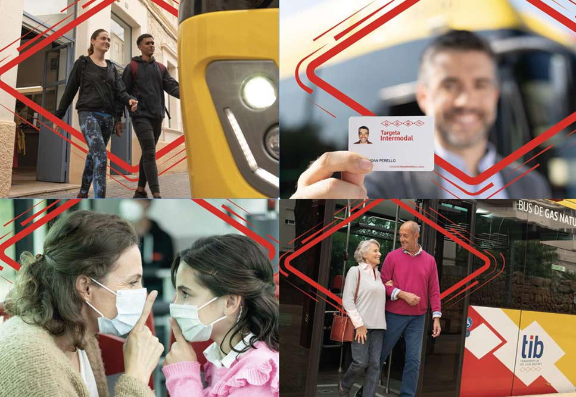

El Consorci de Transports de Mallorca ha puesto en marcha una campaña de promoción del transporte público.
click para seguir leyendoEl Consorci de Transports de Mallorca ha puesto en marcha una campaña de promoción del transporte público.
click para seguir leyendo